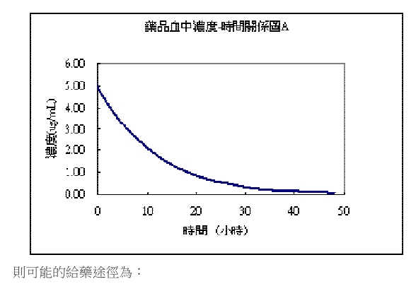
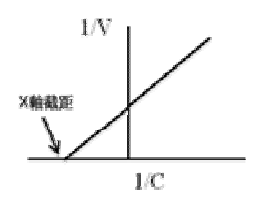

開卷有益 ／
藥師 ／ 藥劑學與生物藥劑學 ／ 105 年第 1 次105 年第 1 次藥師藥劑學與生物藥劑學試題與答案
這一頁是民國 105 年第 1 次藥師藥劑學與生物藥劑學的整份歷屆試題，共 80 題，題目與標準答案出自考選部「國家考試試題及測驗式試題答案」開放資料，其中 73 題附有詳解。以下逐題列出題幹、選項與答案；要計時作答或記錄成績，請用線上練習。
考選部原始場次代碼：105020
線上作答這一科 →
全部 80 題
第 1 題
一藥物（100 mg/mL）以零階次動力學降解，其反應速率常數為0.25 mg/mL/hr，在24 hr後，完整藥 物濃度剩多少（mg/mL）？
（A） 99.75（B） 94（C） 90（D） 86答案：（B）
詳解與考點 正解：零階次降解每單位時間消失固定濃度，故用 Ct = C0 − k0t。24 h 內的濃度損失為 0.25 mg/mL/h × 24 h = 6 mg/mL；剩餘濃度為 100 mg/mL − 6 mg/mL = 94 mg/mL，故選 B。
A：99.75 mg/mL 只扣除了 0.25 mg/mL，相當於僅計入 1 h 的降解量，沒有代入題給的 24 h。
C：90 mg/mL 代表扣除了 10 mg/mL，與 0.25 mg/mL/h 在 24 h 的固定降解量不符。
D：86 mg/mL 代表扣除了 14 mg/mL，同樣不是由題給速率常數乘以 24 h 所得。
本題考點：零階次降解（zero-order degradation）——速率常數的單位含濃度／時間時，直接以 C0 − k0t 計算剩餘濃度；單位檢核（unit analysis）——k0 乘時間必須回到濃度單位，才能與初始濃度相減。
第 2 題 待校
請問下列何者體積最大？
（A） 1毫升（mL）（B） 1品脫（pint）（C） 1湯匙（tablespoonful）（D） 1茶匙（teaspoonful）答案：（B）
第 3 題
在下列化合物中，何者在水中之溶解度會隨溫度之上升而降低？
（A） Calcium hydroxide（B） Potassium nitrate（C） Sodium chloride（D） Ammonium chloride答案：（A）
詳解與考點 正解：判斷重點是溶解過程的熱效應。Calcium hydroxide 在水中的溶解度具有反常的溫度關係，溫度升高時反而降低；其餘鹽類在題目所指的一般範圍內均為升溫後溶解度增加或不會呈此明顯反向關係，故選 A。
B：Potassium nitrate 的溶解度會隨溫度上升明顯增加，方向與題幹相反。
C：Sodium chloride 的溶解度隨溫度變化較小，但不是升溫即降低的典型例子。
D：Ammonium chloride 的溶解通常隨溫度上升而增加，不能符合題述。
本題考點：溫度與溶解度（temperature–solubility relationship）——固體溶質不可一概視為升溫即更易溶，須看其溶解熱；反常溶解度（inverse solubility）——遇到升溫後溶解度下降的敘述時，Calcium hydroxide 是常用判別例。
第 4 題
酏劑處方中通常含乙醇濃度多少%時即具自我防腐作用？
（A） 1~2（B） 5~8（C） 10~12（D） 18~20答案：（C）
詳解與考點 正解：酏劑中的乙醇除協助溶解外，在約 10–12% 時通常已可提供自我防腐作用；題幹問的是達到此效果的慣用濃度範圍，故選 C。
A：1–2% 的乙醇濃度過低，主要不足以作為酏劑的自我防腐條件。
B：5–8% 雖高於（A），仍未達本題所考的通常自我防腐範圍。
D：18–20% 的乙醇濃度可以出現在某些含醇製劑，但不是本題所問的通常起效範圍，數值過高。
本題考點：酏劑（elixir）——判斷處方中乙醇時，要區分其助溶功能與足以自我防腐的濃度；製劑防腐（pharmaceutical preservation）——濃度題應以題幹所問的標準範圍作答，不能把更高但非典型的含量當成門檻。
第 5 題
在煤餾油酚肥皂溶液（Saponated Cresol Solution, U.S.P.）之製備過程中，加入下列何者具有催化 皂化反應之效果？
（A） 丙酮（acetone）（B） 氯仿（chloroform）（C） 甘油（glycerin）（D） 乙醇（alcohol）答案：（D）
詳解與考點 正解：煤餾油酚肥皂溶液的製備須讓油脂與鹼有效接觸而完成皂化；乙醇（alcohol）在此作為催化／促進成分，有助於反應進行，故選 D。
A：丙酮（acetone）可作有機溶媒，但不是該皂化步驟的催化成分。
B：氯仿（chloroform）與皂化反應的促進無關，不能取代乙醇的作用。
C：甘油（glycerin）常用於保濕或調整製劑性質，不是本題所問的皂化催化成分。
本題考點：皂化反應（saponification）——辨認處方各成分時，先分清反應物、促進成分與成品性質調整劑；煤餾油酚肥皂溶液（Saponated Cresol Solution）——題目問製程角色時，不能只因成分同為有機液體便視為作用相同。
第 6 題
關於「顛茄葉流浸膏（belladonna leaf fluidextract）」之敘述，下列何者正確？
（A） 通常以滲漉法製備（B） 每100 mL中含有相當於10 g之顛茄葉（C） 製劑中含約50%乙醇（D） 主要療效為其具瀉下作用答案：（A）
詳解與考點 正解：顛茄葉流浸膏（belladonna leaf fluidextract）為由植物藥材連續萃取而得的流浸製劑，通常以滲漉法製備，故選 A。
B：流浸膏的濃度原則是每 1 mL 約相當於 1 g 原藥材，因此 100 mL 應約相當於 100 g，非 10 g。
C：植物流浸膏常含乙醇而看似合理，但顛茄葉流浸膏的含醇條件並非約 50%，與本品製備規格不符。
D：顛茄葉的主要活性成分具 antimuscarinic 作用，會降低腸胃道蠕動與分泌，不能視為以瀉下為主要療效。
本題考點：流浸膏（fluidextract）——判斷濃度時以 1 mL 約當 1 g 原藥材為基本換算；滲漉法（percolation）——需持續以溶媒通過藥材床、取得萃取液的植物製劑時使用；抗毒蕈鹼作用（antimuscarinic action）——腸胃蠕動降低的方向可用來排除瀉下效果。
第 7 題
室溫（25℃）下，5 g/L的右旋糖溶液（MWdextrose=180）會產生多少滲透壓：
（A） 68.4 atm（B） 6.84 atm（C） 0.684 atm（D） 0.0684 atm答案：（C）
詳解與考點 正解：右旋糖為非電解質，故選用 van ’t Hoff equation π = iMRT，且 i = 1。先換算莫耳濃度：5 g/L ÷ 180 g/mol = 0.0278 mol/L。溫度為 25℃ = 298 K；代入後 π = 1 × 0.0278 mol/L × 0.0821 L·atm/(mol·K) × 298 K = 0.679 atm，約為 0.68 atm，選項以常數與室溫近似列為 0.684 atm，故選 C。
A、B：（A）68.4 atm 與（B）6.84 atm 都遠大於計算值；前者約放大 100 倍，後者約放大 10 倍，均反映莫耳濃度或小數點處理不當。
D：0.0684 atm 約為正確量級的十分之一，未正確代入莫耳濃度與溫度。
本題考點：滲透壓（osmotic pressure）——非電解質用 π = iMRT 時 i = 1，先把質量濃度轉為 mol/L；絕對溫度（absolute temperature）——氣體常數式一律用 K，不可直接代入 ℃；量級估算（order-of-magnitude check）——計算後先看小數點是否使答案相差 10 倍或 100 倍。
第 8 題
下列方程式，何者可供計算出弱酸鹽自溶液中沉澱析出時，溶液之pH值？
（A） Langmuir isotherm（B） Young-Dupré equation（C） Michaelis-Menten equation（D） Henderson-Hasselbalch equation答案：（D）
詳解與考點 正解：弱酸鹽析出與溶液 pH 的關係取決於酸、共軛鹼的比例，因此用 Henderson-Hasselbalch equation 連結 pH、pKa 與離子化比例；在達飽和並開始析出時，可由此建立 pH 與溶解度的關係，故選 D。
A：Langmuir isotherm 用於描述吸附平衡，不是弱酸鹽析出時的酸鹼平衡計算式。
B：Young-Dupré equation 處理接觸角與界面黏附功，與溶液 pH 的離子化判斷無關。
C：Michaelis-Menten equation 描述酵素反應速率與受質濃度，不能求弱酸鹽沉澱時的 pH。
本題考點：Henderson-Hasselbalch equation——遇到弱酸或弱鹼的離子化比例、pH 與析出條件時使用；內在溶解度（intrinsic solubility）——開始析出時要把未離子化物種與飽和條件一起納入判讀。
第 9 題
依據Stokes'方程式，下列何項數值變小，可促進懸液劑中質粒的沉降速率？
（A） 質粒的平均粒徑（B） 質粒的密度（C） 分散介質的黏稠度（D） 分散介質的溫度答案：（C）
詳解與考點 正解：Stokes’ equation 可寫為 v = d²(ρp − ρm)g/(18η)。沉降速率 v 與分散介質黏稠度 η 成反比，所以降低介質黏稠度會使分母變小、沉降加快，故選 C。
A：平均粒徑 d 以平方項影響沉降速率；粒徑變小會讓 v 降低，不會促進沉降。
B：質粒密度降低會縮小 ρp − ρm 的密度差，使沉降驅動力減少，方向相反。
D：溫度不是式中的獨立沉降項；一般降溫會使介質黏度上升，因而傾向減慢沉降，而非促進沉降。
本題考點：Stokes’ equation——懸液粒子沉降取決於粒徑平方、粒子與介質密度差及介質黏度；黏度（viscosity）——要減慢沉降就提高 η，要加快沉降則降低 η；溫度效應（temperature effect）——溫度多透過改變黏度間接影響沉降，不能與粒徑或密度差混為同一直接項。
第 10 題
有關製備口服懸液劑之方法，下列何者不正確？
（A） 適當降低質粒粒徑（B） 增加粒子密度（C） 可以添加懸浮劑（suspending agent）（D） 可以添加凝絮劑（flocculating agent）答案：（B）
詳解與考點 正解：本題問不正確的方法。由 Stokes’ equation 可知，粒子與介質的密度差越大，沉降越快；增加粒子密度會增大密度差，反而破壞口服懸液劑的物理穩定性，故選 B。
A：適度降低粒徑會使沉降速率下降，是提高懸液劑穩定性的常用作法。
C：懸浮劑（suspending agent）可增加連續相黏度或形成結構化載體，幫助減慢沉降。
D：凝絮劑（flocculating agent）形成鬆散絮體，雖可較快沉降，卻能避免緊密結塊並改善再分散性，故仍是可用方法。
本題考點：懸液劑物理穩定性（suspension stability）——降低粒徑、降低密度差或提高黏度可減慢沉降；受控凝絮（controlled flocculation）——目標不是完全不沉降，而是避免形成難以再分散的 caking；Stokes’ equation——判斷處方調整方向時，以密度差與黏度的變化判別。
第 11 題 待校
邊長為10 µm的立方固體，若經分割形成邊長為100 nm的微小立方形固體，其比表面積增加幾倍？
（A） 1（B） 10（C） 100（D） 1000答案：（C）
第 12 題
有關微膠體助溶現象的敘述，下列何者正確？
（A） 外觀為乳白色（B） 屬於兩相系統（C） 為自然發生（D） 蒸氣壓恆定不下降答案：（C）
詳解與考點 正解：微膠體助溶是界面活性劑濃度超過臨界微膠體濃度後形成 micelles，疏水性溶質自發分配進微膠體核心的現象；系統在巨觀上為熱力學穩定的單相，故選 C。
A：微膠體粒徑很小，系統通常澄清或近澄清，不會呈乳劑般乳白外觀。
B：微膠體助溶在巨觀上是單相系統；油、水兩相可辨才是乳劑等兩相系統的特徵。
D：界面活性劑作為溶質會影響溶媒活度，蒸氣壓不應視為恆定且完全不下降。
本題考點：微膠體助溶（micellar solubilization）——超過 critical micelle concentration 後，利用 micelles 提高疏水性藥物表觀溶解度；單相分散系（single-phase dispersion）——外觀與相數要分開判斷，微膠體不是乳白的兩相乳劑；熱力學穩定性（thermodynamic stability）——自發形成且無相分離趨勢時，可與一般粗分散系區別。
第 13 題
製備魚肝油的o/w型乳劑時，加入何種性質的抗氧化劑可達最佳的效果？
（A） 親水性（B） 親油性（C） 兩性（D） 半極性答案：（B）
詳解與考點 正解：魚肝油是 o/w 乳劑的分散油相，氧化反應主要須在油滴內受到抑制；親油性抗氧化劑可分配進油相並接近易氧化脂質，因此保護效果最佳，故選 B。
A：親水性抗氧化劑主要停留在外水相，與油相脂質的接觸較少，保護魚肝油的效率較差。
C：兩性成分可聚集於界面而看似有利，但僅具兩性不足以保證在油滴內維持最佳抗氧化濃度。
D：半極性未直接保證充分分配至油相，不能取代親油性作為本題的最佳選擇。
本題考點：乳劑氧化防護（emulsion oxidation control）——先辨認易氧化物位於油相或水相，再選擇能分配至該相的抗氧化劑；分配行為（partitioning）——o/w 乳劑中，保護油滴脂質時以親油性抗氧化劑的油相濃度為判準。
第 14 題
有關aluminum hydroxide gel分散系性質之敘述，下列何者正確？
（A） 具高滲透壓（B） 粒子行布朗運動（C） 擴散速度較溶液劑大（D） 粒子會沉降本題送分，無標準答案
詳解與考點 本題經考選部公告一律給分。Aluminum hydroxide gel屬粗分散系（coarse dispersion）之膠體懸浮液，(B)其粒子確實可行布朗運動（膠體粒子共通性質），(D)因粒子較大，靜置後仍會產生沉降，兩者皆為此類分散系可觀察之正確性質，同時成立致擇一困難。(A)此類分散系滲透壓甚低而非高滲透壓；(C)其粒子擴散速度因粒徑較大而遠低於真溶液，皆明顯錯誤可排除。作答以現行藥劑學分散系統教材為準。
第 15 題
Type B gelatin之等電點（isoelectric point）在pH多少？
（A） 2（B） 5（C） 8（D） 11答案：（B）
詳解與考點 正解：Type B gelatin 是鹼（石灰）處理明膠，等電點偏酸性，約在 pH 4.7 至 5.2，最接近 pH 5；此時正、負電荷大致平衡，淨電荷最小，故選 B。
A：pH 2 比 Type B gelatin 的等電點低得多，在此酸性條件下不會是其淨電荷為零的位置。
C：pH 8 落在酸處理的 Type A gelatin 之等電點範圍（約 pH 7 至 9），不符合鹼處理的 Type B gelatin。
D：pH 11 屬強鹼性範圍，與 Type B gelatin 的酸性等電點相差更大。
本題考點：等電點（isoelectric point）——蛋白質在正、負電荷平衡、淨電荷最小的 pH 即為 pI；Type A 與 Type B gelatin——酸處理的 Type A pI 偏鹼性約 pH 7 至 9，鹼（石灰）處理的 Type B pI 偏酸性約 pH 4.7 至 5.2，即本題的 pH 5，應以處理法區分。
第 16 題
下列何者非為半固體劑型？
（A） 軟膏劑（B） 硬膏劑（C） 乳霜劑（D） 懸液劑答案：（D）
詳解與考點 正解：半固體劑型以具有可塗展、可附著於皮膚或黏膜的稠度為特徵；懸液劑是固體粒子分散於液體的液體劑型，不屬半固體，故選 D。
A：軟膏劑具有半固體基劑，可供局部塗用，是典型半固體劑型。
B：硬膏劑為外用貼敷類半固體製劑，具黏附性並可隨體溫軟化，不是液體懸液劑。
C：乳霜劑通常為半固體乳劑，兼具乳劑結構與可塗展的稠度。
本題考點：半固體劑型（semisolid dosage forms）——以製劑在使用溫度下的稠度與塗布性分類；懸液劑（suspension）——固體分散於液體仍屬液體製劑，不能因含固體粒子就歸類為半固體。
第 17 題
下列何者非為理想之軟膏基劑的物理化學性質？
（A） 無味（B） 有油膩感（C） 不造成皮膚刺激性（D） 至少可以吸著50%的水分答案：（B）
詳解與考點 正解：理想軟膏基劑應兼顧病人接受性、皮膚相容性與處方相容性；油膩感會降低使用舒適性與可接受度，因此「有油膩感」不是理想性質，故選 B。
A：無味可避免感官不適與不必要的香味干擾，是理想基劑的性質。
C：不造成皮膚刺激性是外用基劑的基本安全要求，屬理想性質。
D：具足夠吸水能力可納入水性藥液或滲出液，題示至少可吸著 50% 水分符合此項處方相容性的要求。
本題考點：軟膏基劑選擇（ointment-base selection）——評估時同看舒適性、無刺激性與對水性成分的相容性；患者接受性（patient acceptability）——外用製劑的油膩、氣味與塗展性會影響持續使用，屬基劑品質判準。
第 18 題
下列有關氧化鋅製劑的敘述，何者錯誤？
（A） 氧化鋅軟膏屬於油質性基劑（B） 氧化鋅軟膏係以研合法製作（C） 氧化鋅糊劑不宜用於滲液患部（D） 鋅明膠製劑之作用期可達數週答案：（C）
詳解與考點 正解：本題問錯誤敘述。氧化鋅糊劑含較高比例的不溶性粉末，具有吸收滲液與保護患部的作用，因此說它不宜用於滲液患部是錯的，故選 C。
A：氧化鋅軟膏以油質性基劑製備，具保護與隔離作用，敘述正確。
B：氧化鋅為不溶性粉末，先以研合法使其在基劑中細緻均勻分散，可避免粗粒感，敘述正確。
D：鋅明膠製劑可形成持續性的保護覆層，用於適當患部時其作用期可達數週，敘述正確。
本題考點：糊劑（paste）——高粉末含量可增加吸收滲液與保護效果，適合用來判斷滲液患部的處置；研合法（levigation）——不溶性粉末加入半固體基劑前先細化分散，可提升均一性與使用感；油質性基劑（oleaginous base）——以隔離與保護為主，與可水洗基劑的性質不同。
第 19 題
下列何者是油質性軟膏基劑？
（A） 白軟石臘（B） 親水石臘（C） 消散軟膏（D） 親水軟膏答案：（A）
詳解與考點 正解：白軟石臘為烴類基劑，具油膩性、不易被水洗去，且本身不以吸水或溶於水為主要特徵，故屬油質性軟膏基劑，故選 A。
B：親水石臘可吸收水性成分，屬吸收性基劑，不是單純油質性基劑。
C：消散軟膏用後油膩感較少，屬乳化型基劑的概念，與烴類油質性基劑不同。
D：親水軟膏設計為可與水相容、較易水洗的基劑，不具白軟石臘的油質性特徵。
本題考點：油質性基劑（oleaginous base）——烴類、油膩且不易水洗時歸入此類，白軟石臘是代表；吸收性基劑（absorption base）——可納入水性液體者要與純油質性基劑分開；可水洗基劑（water-removable base）——乳化型或親水性基劑的判斷重點是與水的相容性。
第 20 題
人體皮膚真皮層（dermis）的厚度約為：
（A） 1~2 mm（B） 3~5 mm（C） 6~8 mm（D） 9~11 mm答案：（B）
詳解與考點 正解：人體皮膚真皮層的厚度依教科書所引用的一般數值約落在 3～5 mm 的範圍，是表皮層之下、皮下組織之上、含有大量膠原纖維與血管神經的結構層，故選 B。
A：1～2 mm 較接近表皮層本身的厚度量級，並非真皮層。
C、D：6～8 mm 與 9～11 mm 都明顯超出真皮層常見厚度範圍，較接近皮下組織（含脂肪層）的厚度量級。
本題考點：皮膚各層厚度的量級判斷（skin layer thickness）——表皮、真皮、皮下組織三層的厚度量級依序遞增，真皮層是經皮吸收（transdermal drug delivery）藥物須穿越的主要屏障層之一，其厚度數值也常出現在穿皮吸收相關計算題中。
第 21 題
藥物經由皮膚局部吸收最大的障礙在於：
（A） 角質層（stratum corneum）（B） 上皮層（epidermis）（C） 真皮層（dermis）（D） 皮下組織（subcutaneous tissue）答案：（A）
詳解與考點 正解：皮膚局部吸收的速率限制層是最外側的角質層（stratum corneum）。角質細胞嵌在高度有序的細胞間脂質中，水分含量低且擴散路徑曲折；藥物必須先跨過此層，才會進入較含水、灌流較佳的組織，因此它提供最大的擴散阻力，故選 A。
B：表皮層（epidermis）是包含角質層在內的較廣解剖名稱。真正決定多數藥物通量的是其中的角質層，不能用範圍較大的名稱取代速率限制層。
C、D：真皮層（dermis）與皮下組織（subcutaneous tissue）位於角質層之下；藥物抵達這些較含水的組織後，主要面臨分布與血流帶走，而非最初、最大的皮膚擴散障礙。
本題考點：角質層屏障（stratum corneum barrier）——判斷經皮吸收瓶頸時，先找最外層的低含水、細胞間脂質結構；經皮通量（transdermal flux）——後續組織即使有血流，仍無法消除角質層先造成的主要擴散阻力。
第 22 題
大部分經由皮膚吸收的藥物通過角質層的主要途徑為何？
（A） 脂質雙層（B） 角質細胞（C） 汗腺（D） 毛囊答案：（A）
詳解與考點 正解：多數經皮藥物跨越角質層時，主要沿角質細胞間的脂質雙層擴散。角質細胞本身富含角蛋白，直接穿越的阻力較高；連續的細胞間脂質相才是多數親脂性藥物最常使用的路徑，故選 A。
B：角質細胞屬經細胞途徑，藥物須反覆穿越富含角蛋白的細胞內結構，並非角質層的主要通行途徑。
C、D：汗腺與毛囊屬皮膚附屬器途徑，雖可形成旁路，但所占表面積很小；（C）汗腺與（D）毛囊都不能代表大部分藥物的主要吸收路徑。
本題考點：角質層細胞間途徑（intercellular lipid pathway）——藥物若主要靠親脂性擴散，優先判斷是否沿細胞間脂質移動；皮膚附屬器旁路（appendageal pathway）——汗腺與毛囊可提供局部捷徑，但面積小時通常不是主導通量的路徑。
第 23 題
下列那一種aspirin製劑的生體可用率最低？
（A） 溶液劑（B） 注射劑（C） 錠劑（D） 栓劑答案：（D）
詳解與考點 正解：比較 aspirin 劑型的生體可用率時，要看藥物能否穩定且完整進入全身循環。栓劑在直腸內的溶解、分散與吸收會受直腸內容物、插入位置及局部血流影響，吸收常較不完整且變異大；在本題所列劑型中最低，故選 D。
A：溶液劑已沒有崩散與溶離這兩道步驟，口服後較容易迅速提供可吸收的 aspirin，不能作為最低生體可用率的選項。
B：注射劑直接給入體內，避開腸胃道吸收與首渡代謝的變異；在正確投與下，其全身可用率最高而非最低。
C：錠劑雖須先崩散與溶離，但口服吸收通常仍比直腸栓劑穩定；分辨關鍵在於栓劑的局部溶解與直腸吸收變異更大。
本題考點：劑型與生體可用率（dosage form and bioavailability）——比較途徑時，依序看是否需崩散、溶離、跨膜吸收及是否受首渡代謝影響；直腸栓劑吸收（rectal absorption）——局部環境與插入位置會使吸收不完全且變異，不能只因可避開部分首渡代謝就假定可用率較高。
第 24 題
在皮膚表皮的發生層（stratum germinativum）又稱為：
（A） 基底層（basal cell layer）（B） 顆粒層（granular layer）（C） 棘狀層（prickle cell layer）（D） 透明層（stratum lucidum）答案：（A）
詳解與考點 正解：表皮的發生層（stratum germinativum）是持續分裂、補充上方角質細胞的最深層，又稱基底層（basal cell layer），故選 A。
B：顆粒層（granular layer）位於較表淺處，細胞內可見角質透明顆粒，並不是主要進行細胞增生的發生層。
C：棘狀層（prickle cell layer）在基底層之上，名稱來自細胞間橋在顯微鏡下的外觀；它不等同於發生層。
D：透明層（stratum lucidum）只在厚皮膚較明顯，位於顆粒層與角質層之間，位置與功能都不符合發生層。
本題考點：表皮分層（epidermal layers）——遇到發生、增生或再生等線索，先定位最深的基底層；角化分化（keratinization）——由基底層往表面移動時，細胞逐步分化，不可把中間層或透明層當成增生來源。
第 25 題
以溼式法製備「發泡性顆粒劑」時，下列敘述何者錯誤？
（A） 通常以含水之酒精作為黏合劑，將粉末潤溼，以製得軟塊（B） 將軟塊過篩製粒後，移置於烘箱，以低於54℃溫度乾燥（C） 乾燥後之顆粒應置於空氣中冷卻，始能分包裝填（D） 製備過程所接觸之容器，宜為不銹鋼之材質答案：（C）
詳解與考點 正解：發泡性顆粒劑的濕式製備必須避免乾燥顆粒重新吸濕，因為水分會使酸與碳酸氫鹽提早反應。乾燥後若如（C）置於空氣中冷卻，容易吸收空氣水分、降低發泡安定性，故（C）的敘述錯誤，故選 C。
A：以適量含水酒精迅速潤濕成軟塊，可進行濕式造粒而避免加入大量自由水；這是控制發泡成分過早反應的做法，敘述正確。
B：軟塊過篩後以低於54℃的低溫乾燥，可移除造粒時帶入的水分，同時避免高溫造成成分變化，敘述正確。
D：製程會接觸酸性與鹼性粉末及濕潤介質；不銹鋼容器較耐蝕且不易與內容物反應，適合作為接觸容器，敘述正確。
本題考點：發泡性顆粒劑（effervescent granules）——酸與碳酸氫鹽配方的判斷核心是避水，乾燥、冷卻與包裝都要控制吸濕；濕式造粒（wet granulation）——選擇潤濕劑時要同時讓粉末成軟塊並避免啟動不希望的反應。
第 26 題
關於「明膠硬膠囊」之敘述，下列何者正確？
（A） 四環素膠囊之生體可用率，並不會因長期貯存於高溼度下而受影響（B） 膠囊劑口服後，於胃酸中其囊殼會因吸水而軟化，但並不溶解（C） 硬膠囊殼之組成成分主要有：明膠、蔗糖、水等（D） 膠囊殼通常具阻隔水分之功能，故適宜充填吸潮性之藥物答案：（C）
詳解與考點 正解：明膠硬膠囊殼的主要組成為明膠、蔗糖與水等，利用明膠形成可充填與可崩解的囊殼；（C）的組成敘述正確，故選 C。
A：高溼度長期貯存會改變明膠殼與內容物的含水狀態，可能使囊殼軟化、變形並影響 tetracycline 的安定與釋放，不能說生體可用率不受影響。
B：硬膠囊殼在胃液中會吸水軟化，接著應崩解與溶解以釋放內容物；「並不溶解」與口服膠囊的預期釋放行為不符。
D：明膠囊殼並非絕對阻隔水分，吸潮性藥物可能與囊殼間交換水分而影響安定性；是否適合充填必須看防潮設計，不能據此概括為適宜。
本題考點：硬膠囊殼組成（hard gelatin capsule shell）——辨識囊殼時，以明膠與其含水狀態為核心；濕度對膠囊劑的影響（moisture effect on capsules）——囊殼含水改變會連動外觀、崩解與內容物安定性，吸潮性內容物需另作防潮評估。
第 27 題
依藥物的溶解度（solubility）與穿透係數（permeability）可將藥物分為四大類別，試問何者最有可 能建構體外溶離速率與體內生體可用率的相關性？
（A） 類別I：高溶解度高穿透係數（B） 類別II：低溶解度高穿透係數（C） 類別III：高溶解度低穿透係數（D） 類別IV：低溶解度低穿透係數答案：（B）
詳解與考點 正解：體外溶離速率最能預測體內生體可用率的情況，是溶離本身成為吸收速率限制步驟而腸道穿透並不受限。類別II藥物為低溶解度、高穿透係數，改善或改變溶離速率便會直接影響可吸收藥量，最可能建立相關性，故選 B。
A：類別I雖有高溶解度與高穿透係數，但吸收通常不受溶離限制；體外溶離已很快時，較難用其差異解釋體內可用率差異。
C：類別III的高溶解度使溶離通常不是瓶頸，低穿透係數才是限制；只量體外溶離不能可靠預測其體內吸收。
D：類別IV同時低溶解度、低穿透係數，溶離與穿透都可能限制吸收；單一溶離試驗無法獨自代表生體可用率。
本題考點：生物藥劑學分類系統（Biopharmaceutics Classification System，BCS）——先分辨限制吸收的是溶解度還是穿透性；體外體內相關性（in vitro-in vivo correlation，IVIVC）——當溶離是主限制而穿透性充足時，體外溶離資料才最有機會對應體內可用率。
第 28 題
明膠衣錠（gelatin-coated tablets）與其外觀類似的膠囊劑型（gelatin capsules）相比較會有何優 點？
（A） 包衣緊密接觸而穩定藥物（B） 包衣更緻密而提高安定性（C） 明膠成分更黏貼不易變質（D） 體積更小且更易吞服答案：（D）
詳解與考點 正解：明膠衣錠保有錠劑緊實的錠核，外覆明膠衣後呈現近似膠囊的外觀與滑順感；相較同用途的膠囊，通常可做得較小而較易吞服，故選 D。
A：包衣與錠核緊密接觸是製程特徵，不會單獨保證藥物更穩定；安定性仍取決於水分、氧氣、光線與藥物本身。
B：包衣是否提高安定性要看其實際阻隔性與配方，不能僅以「更緻密」推論為明膠衣錠相對膠囊的主要優點。
C：明膠的黏貼性有助形成包衣，卻不等於藥物或劑型必然不易變質；這項性質不能回答兩種劑型比較的核心差異。
本題考點：明膠衣錠（gelatin-coated tablets）——比較劑型時，先看錠核與膠囊殼在體積及吞服感上的結構差異；劑型安定性（dosage-form stability）——包衣存在不等於一定較穩定，必須再判斷其對特定降解因子的阻隔能力。
第 29 題
設計多層錠片或子母錠片（multiply compressed tablets）的主要目的為何？
（A） 可分開剝層方便病人使用（B） 可隔開有相配性問題成分（C） 可區分日用與夜用的成分（D） 可分次調整病人使用劑量答案：（B）
詳解與考點 正解：多層錠片或子母錠片把不同成分壓成彼此分離的層或核心與外層，最主要用途是隔開彼此有相容性問題的成分，避免在貯存或製程中接觸而產生降解，故選 B。
A：多層結構不是為了讓病人自行剝層使用；各層仍設計成同一劑型的一部分，不能把可分層當作主要目的。
C：日用與夜用成分可以藉其他劑型或包裝區分，並非多層壓錠的基本設計動機；分辨關鍵在於本題問的是配方相容性。
D：多層錠不是供病人分次拆開調整劑量的構造，層與層間的分離是為了製劑功能，而非個別劑量調整。
本題考點：多層壓錠（multiply compressed tablets）——配方中有物理或化學不相容時，以不同層隔離來降低接觸；藥物相容性（drug-excipient compatibility）——判斷設計目的時，先找是否要避免成分互相反應，而不是從外觀上的分層推論使用方式。
第 30 題
一般咀嚼錠（chewable tablet）可以不含下列何種成分？
（A） 崩散劑（disintegrant）（B） 黏合劑（binder）（C） 潤滑劑（lubricant）（D） 填充劑（filler）答案：（A）
詳解與考點 正解：一般咀嚼錠在吞服前已由咀嚼動作破碎，不必依賴錠劑進入胃腸道後自行崩散；因此崩散劑（disintegrant）可以不含，故選 A。
B：黏合劑（binder）可使粉末形成足夠強度的錠核，避免製造、運輸或咀嚼前就鬆裂，通常仍有其製劑功能。
C：潤滑劑（lubricant）可降低壓錠時與沖模壁的摩擦，幫助排錠；咀嚼與否不會消除這項製程需求。
D：填充劑（filler）用來補足體積並改善錠劑的成形與口感，尤其低劑量藥物常需要，不能因為是咀嚼錠就一概省略。
本題考點：咀嚼錠（chewable tablets）——先判斷崩散是否由病人的咀嚼動作取代，再決定是否需崩散劑；錠劑賦形劑功能（tablet excipient functions）——黏合、潤滑與填充分別對應成錠、排錠與體積，不可互相混為一談。
第 31 題
下列何種粉碎機器，一般得到之粒子較大？
（A） Roller mill（B） Ball mill（C） Fluid-energy mill（D） Colloid mill答案：（A）
詳解與考點 正解：Roller mill 主要以兩滾輪的壓縮與破碎作用降低粒徑，通常得到的粒子相對較大；與高能量衝擊或研磨設備相比，較符合題幹所問，故選 A。
B：Ball mill 以研磨球反覆撞擊與磨耗粉體，能持續降低粒徑，通常用於較細的粉碎。
C：Fluid-energy mill 利用高速氣流帶動粒子互撞，粉碎能量高，常用於微細粒子的製備，與「粒子較大」相反。
D：Colloid mill 以高速剪切處理懸浮或半固體系統，可製備細緻分散體，不是一般用來取得較大粒子的設備。
本題考點：粉碎機理（size-reduction mechanisms）——比較設備時，先分辨是壓縮、撞擊、磨耗、剪切還是高速氣流碰撞；粒徑與粉碎能量（particle size and milling energy）——在其他條件相近時，高能量碰撞與磨耗通常比滾輪壓碎產生更細的粒子。
第 32 題
注射劑微粒物質肇因於外來不溶性、移動性粒子非故意性之污染，在注射劑微粒物質檢查法中，注 射劑容量100 mL以上者，以每mL計算，大於或等於10 µm者不得超過a個，大於或等於25 µm者不 得超過b個，（a，b）為多少？
（A） （3，0）（B） （10，1）（C） （25，3）（D） （100，10）答案：（C）
詳解與考點 正解：題幹限定注射劑容量為100 mL以上，且限度要按每mL計算。大於或等於10 μm的微粒不得超過25個，大於或等於25 μm的微粒不得超過3個，所以（a，b）=（25，3），故選 C。
A：（A）的3個與0個把兩個粒徑門檻都設得比本題規定更嚴格，並非此容量範圍的限度組合。
B：（B）的10個與1個同樣低於題目規定的每mL上限；不能把較小數字誤認為本題所要求的標準。
D：（D）的100個與10個則明顯高於題目規定的上限，會放寬微粒物質的允收程度。
本題考點：注射劑微粒物質限度（particulate matter limits）——先辨識容量區間，再確認限度是每mL或每容器計；粒徑分級（particle-size thresholds）——同一檢查要分別讀取10 μm與25 μm門檻，不能只記其中一個數字。
第 33 題
下列那一種水在中華藥典中未要求無內毒素？
（A） Sterile water for injection（B） Water for injection（C） Sterile purified water（D） Sterile water for irrigation答案：（C）
詳解與考點 正解：判斷關鍵在各種水的預定用途與藥典對內毒素的要求。Water for injection、Sterile water for injection 與 Sterile water for irrigation 會進入血流、體腔或創面，皆訂有細菌內毒素限量；Sterile purified water 供非注射用途，藥典只訂無菌與純水規格，未訂內毒素限量，因此（C）符合題意，故選 C。
A：Sterile water for injection 供注射用途，須同時控制微生物與內毒素，不能作為未要求無內毒素的選項。
B：Water for injection 是注射製劑的重要製備用水，內毒素控制是其品質要求的一部分，與題意不符。
D：Sterile water for irrigation 在本題採用的藥典分類下亦有內毒素要求；不能只因其用途是沖洗而排除該項品質規範。
本題考點：藥用水分類（pharmaceutical water categories）——判斷規格時先看水是供注射、製備還是其他無菌用途；內毒素控制（bacterial endotoxin control）——無菌與無內毒素是不同品質屬性，不能由其中一項自動推論另一項。
第 34 題
依中華藥典第七版進行無菌試驗時，採用微孔濾膜過濾法應培養觀察幾天以上？
（A） 3（B） 7（C） 14（D） 21答案：（B）
第 35 題
下列何種藥品之注射劑並不適合採用家兔進行熱原測試？
（A） NSAIDs（B） Hormones（C） Antihistamines（D） Antihypertensive agents答案：（A）
詳解與考點 正解：家兔熱原試驗以體溫上升作為反應指標；NSAIDs 抑制前列腺素生成並具有解熱作用，可能壓低家兔的發熱反應而造成偽陰性，因此不適合作為此類注射劑的熱原測試，故選 A。
B：Hormones 並不以直接抑制發熱反應為其類別特徵，不能僅因是荷爾蒙注射劑就排除家兔熱原試驗。
C：Antihistamines 的主要作用是拮抗組織胺相關反應，不等同於 NSAIDs 的解熱機轉，並非題幹所問的不適用原因。
D：Antihypertensive agents 的治療目標是調節血壓；沒有 NSAIDs 那種典型的解熱遮蔽作用，不能據此判為不適合。
本題考點：家兔熱原試驗（rabbit pyrogen test）——先看受試藥物是否會直接干擾發熱這個讀值；NSAIDs 的解熱作用（antipyretic effect of NSAIDs）——抑制前列腺素可壓低體溫反應，會使以發燒判讀的試驗失真。
第 36 題
下列何藥之乾粉注射劑，不含任何添加物？
（A） Penicillin G potassium（B） Ampicillin sodium（C） Erythromycin lactobionate（D） Dactinomycin答案：（B）
詳解與考點 正解：判斷乾粉注射劑是否「不含任何添加物」，要看處方中除藥物鹽本身外，有無緩衝劑、賦形劑或安定劑。Ampicillin sodium 乾粉注射劑僅為無菌的 ampicillin 鈉鹽，加注射用水即可復溶，處方不另加成分，故選 B。
A：Penicillin G potassium 的乾粉注射劑在本題採用的製劑分類中另有處方添加成分，不能列為不含任何添加物。
C：Erythromycin lactobionate 的乾粉製劑需考量復溶與安定性，在本題分類中不是單純只含藥物鹽的品項。
D：Dactinomycin 的乾粉注射劑亦含有製劑用添加成分，故不符合「不含任何添加物」的絕對條件。
本題考點：乾粉注射劑（dry-powder injections）——判斷時要分開看活性藥物鹽與為安定、復溶或製程加入的賦形劑；注射劑處方辨識（parenteral formulation identification）——題目問「任何添加物」時，須以特定製劑的處方分類判定，不能只看藥名。
第 37 題
最常用於patient-controlled analgesia（PCA）的注射劑含有下列那一個藥品？
（A） Piroxicam（B） Pentazocine（C） Morphine sulfate（D） Diclofenac sodium答案：（C）
詳解與考點 正解：patient-controlled analgesia（PCA）需要可由病人依疼痛程度小量、自主追加且容易滴定的注射止痛藥。Morphine sulfate 是最常用的強效 opioid 之一，具成熟的注射 PCA 使用方式，故選 C。
A：Piroxicam 為 NSAID，雖有止痛作用，但不是最常作為 PCA 主藥的可滴定強效 opioid。
B：Pentazocine 也具止痛作用，因此容易成為誘答；但它是混合型 opioid，藥效與不良反應特性不如 morphine 適合作為最常用的 PCA 代表藥物。
D：Diclofenac sodium 為 NSAID，可作輔助止痛，卻不能取代 morphine 在 PCA 中作為主要、可自行滴定的強效鎮痛藥角色。
本題考點：病人自控式止痛（patient-controlled analgesia，PCA）——選藥時看是否能小量追加、快速滴定並提供足夠強度鎮痛；opioid analgesics——強效 opioid 是注射 PCA 的典型主藥，NSAIDs 多屬輔助止痛而非最常用主藥。
第 38 題
下列何藥之注射液主要成分最易被PVC管吸附而損失給藥劑量？
（A） Adrenaline（B） Fluorouracil（C） Nitroglycerin（D） Oxytocin答案：（C）
詳解與考點 正解：Nitroglycerin 具脂溶性，輸注時容易被 PVC 管路吸附或吸收，造成管路後端濃度下降與實際給藥劑量損失；這是其注射液給藥裝置的重要相容性問題，故選 C。
A：Adrenaline 的注射液較需注意氧化造成的安定性問題，並非本題所問最典型的 PVC 吸附造成劑量損失。
B：Fluorouracil 為較親水的抗代謝藥，沒有 nitroglycerin 那種在 PVC 管路顯著損失的代表性。
D：Oxytocin 的輸注仍須依製劑與器材評估，但在本題的比較中，不是因 PVC 吸附而最典型、最易造成劑量損失的藥物。
本題考點：PVC 吸附（PVC sorption）——輸注藥物若具高脂溶性，須先評估是否會被管路材料帶走；nitroglycerin 管路相容性（nitroglycerin infusion compatibility）——當藥物濃度會因 PVC 損失時，給藥器材本身會改變實際輸入劑量。
第 39 題
Hydroxyprogesterone caproate注射液是使用下列那一種油製成的？
（A） Peanut oil（B） Cottonseed oil（C） Castor oil（D） Sesame oil答案：（C）
詳解與考點 正解：Hydroxyprogesterone caproate 為脂溶性的酯化類固醇，其標準油性注射液以 castor oil 作為載體；（C）符合該製劑處方，故選 C。
A、B、D：Peanut oil、cottonseed oil 與 sesame oil 都是其他油性注射劑可能使用的植物油載體，但（A）、（B）與（D）都不是本題所述 Hydroxyprogesterone caproate 注射液的指定油相。
本題考點：油性注射液載體（oily injection vehicle）——脂溶性藥物的油相必須依特定處方辨識，不能只因都是植物油就互換；酯化類固醇製劑（esterified steroid formulation）——酯化可提高脂溶性，常需搭配適當油性載體形成可注射製劑。
第 40 題
下列那一抗生素之注射液在中華藥典第七版中註明添加苯甲醇作為抑菌劑？
（A） Ampicillin sodium（B） Ceftizoxime sodium（C） Lincomycin hydrochloride（D） Vancomycin hydrochloride答案：（C）
詳解與考點 正解：題幹指定《中華藥典》第七版的品項資料；Lincomycin hydrochloride 注射液註明添加 benzyl alcohol 作為抑菌劑，因此（C）正確，故選 C。
A：Ampicillin sodium 的該藥典品項不以 benzyl alcohol 作為題幹所問的抑菌劑，不能因同為抗生素就推定處方相同。
B：Ceftizoxime sodium 的製劑規格與 Lincomycin hydrochloride 不同，沒有題幹所指的 benzyl alcohol 添加註記。
D：Vancomycin hydrochloride 的注射製劑亦非該版註明以 benzyl alcohol 抑菌的品項；抗生素的分類相近不代表防腐系統相同。
本題考點：注射劑抑菌劑（parenteral bacteriostatic agents）——判斷添加物時要逐一對應特定藥品的藥典品項，不能由治療類別類推；benzyl alcohol——此成分在多劑量或需抑菌的特定注射製劑中具有防腐用途，是否可用須依處方資料確認。
第 41 題
藥典中除另有規定外，下列何者不得作為注射劑之添加物？
（A） 著色劑（coloring agent）（B） 抗氧化劑（antioxidants）（C） 螯合劑（chelating agents）（D） 張力調節劑（tonicity adjustments）答案：（A）
詳解與考點 正解：注射劑直接進入人體組織或血液，外觀變化是重要品質訊號；除另有規定外，不得以（A）著色劑遮蔽變色或異物，故選 A。
B：抗氧化劑可用來減緩成分氧化，只要其安全性、相容性與用量符合要求，並非一律禁止。
C：螯合劑可結合微量金屬離子，降低金屬催化氧化的風險，屬可依處方需要使用的安定化添加物。
D：張力調節劑用來調整滲透壓，讓注射液較接近生理張力，並非一律不得使用。
本題考點：注射劑添加物（parenteral excipients）——判斷可否添加時，先看是否妨礙安全性或品質辨識；外觀品質（appearance quality）——會掩蓋變色或異物的處理通常不可接受。
第 42 題
下列幾種放射線離子，何者的穿透能力最強？
（A） Alpha粒子（B） Beta射線（C） Gamma射線（D） X－ray答案：（C）
詳解與考點 正解：判準是比較各種游離輻射在物質中被吸收前的典型穿透距離。Gamma 射線來自原子核衰變，光子能量多在 MeV 等級，又不帶電、與物質作用機率低，因此（C）Gamma 射線穿透力最強，故選 C。
A：Alpha 粒子帶正電且質量大，與物質作用強而容易失去能量；電離能力高，但穿透距離短。
B：Beta 射線由高速電子或正電子組成，穿透力通常介於 Alpha 粒子與 Gamma 射線之間。
D：X-ray 同為不帶電的電磁輻射且具有穿透力，但其來源是核外電子躍遷或制動輻射，能量多在 keV 等級，低於來自核衰變的 Gamma 射線，故同條件下並非最強者。
本題考點：游離輻射穿透力（penetrating power）——比較防護與材質阻擋時，先依輻射種類與典型能量判讀；線性能量轉移（linear energy transfer）——電離能力強不等於穿透距離長。
第 43 題
依中華藥典第七版「注射劑塑膠容器試驗法」，需使用那種金屬標準溶液比對？
（A） 鈣（B） 鉛（C） 銅（D） 鎂答案：（B）
詳解與考點 正解：關鍵在塑膠容器可能釋出痕量金屬，該試驗以（B）鉛標準溶液作為金屬污染的比較基準，故選 B。
A：鈣雖是常見金屬離子，但不是本試驗規定用來比較的金屬標準。
C：銅離子可造成污染或催化氧化，然而不是題示試驗所用的標準比較液。
D：鎂離子同樣不是該金屬限度比較所指定的標準離子。
本題考點：注射劑塑膠容器試驗（plastic containers test for injections）——遇到容器金屬釋出問題，判斷重點是藥典指定的比較標準；重金屬限度試驗（heavy-metal limit test）——比較液的用途是建立可接受污染程度的判讀基準。
第 44 題
混濁或具黏性之液體製劑依中華藥典第七版「無菌試驗法」進行厭氧菌檢查時，應使用何種培養 基？
（A） 硫醇乙酸鹽培養基I（B） 硫醇乙酸鹽培養基II（C） 大豆分解蛋白質－乾酪素培養基I（D） 大豆分解蛋白質－乾酪素培養基II答案：（B）
詳解與考點 正解：題目同時限制檢品為混濁或具黏性液體，且要檢查厭氧菌；應採用（B）硫醇乙酸鹽培養基II，以還原性環境支持厭氧菌培養，故選 B。
A：硫醇乙酸鹽培養基I為一般型，適用於澄明、可直接判讀的檢品；混濁或具黏性的液體製劑須改用替代型的硫醇乙酸鹽培養基II，才能在厭氧條件下正確判讀，故此型別不適用。
C：大豆分解蛋白質－乾酪素培養基I主要用於好氧菌與真菌的培養，不具本題厭氧菌檢查所需的還原條件。
D：大豆分解蛋白質－乾酪素培養基II同樣不是本題對應的厭氧菌檢查培養基；分辨關鍵在培養基的還原環境，不只看培養基編號。
本題考點：無菌試驗培養基選擇（sterility test media selection）——先由欲檢出的微生物決定培養環境，再依檢品性質選規定型別；厭氧菌培養（anaerobic culture）——需維持低氧還原環境，不能以一般好氧菌或真菌培養基替代。
第 45 題
根據分室理論（compartment models）某藥靜脈快速注射投與病人後之血漿中濃度可用下列公式估算：CP（mg/mL）= 70e-1.5t + 20e- 0.2t + 24e-0.03t（時間單位為小時）。下面敘述何者與此情況相符？ ①本藥之體內藥物動態半衰期為 3.5 小時 ②本藥之模室圖形 為： ③本藥之中央室微分方程式為：
（A） 僅①（B） 僅②（C） ①②（D） ②③答案：（B）
第 46 題
已知haloperidol decanoate水溶性比haloperidol lactate差，製劑時選用芝麻油作為製劑載體 （vehicle）。由haloperidol製劑體內動態（如下表），請問下列選項中haloperidol decanoate製劑 最可能的給藥途徑為何？ 給藥途徑 吸收百分率tmax (到達最高血中濃度的時間) 排除相半衰期 Decanoate（？） 4-11 days 3 wk Lactate orally 60 3-5 hr 24（12~38）hr Lactate IM 75 0.33 hr 21（13~36）hr Lactate IV 100 immediate 14（10~19）hr
給藥途徑 吸收百分率 tmax（到達最高血中濃度的時間） 排除相半衰期 Decanoate（？） 4-11 days 3 wk Lactate orally 60 3-5 hr 24（12~38）hr Lactate IM 75 0.33 hr 21（13~36）hr Lactate IV 100 immediate 14（10~19）hr
（A） Intraveneously（B） Subcutaneously（C） Orally（D） Intramuscularly答案：（D）
詳解與考點 正解：haloperidol decanoate 的 tmax 長達 4～11 天、排除相半衰期長達 3 週，這種極緩慢的吸收與釋放特徵是油性載體（芝麻油）depot 製劑深部肌肉注射後緩慢釋放的典型藥動學表現，靜脈或皮下注射的油性懸液無法達到這種緩釋效果，口服則不適用於水溶性差、以油性載體設計的長效針劑，故選 D。
A：靜脈注射要求藥品為澄清水溶液，油性懸液無法靜脈注射，且靜脈注射的 tmax 應為立即出現，與表中數天等級的 tmax 不符。
B：皮下注射一般不用於大量油性懸液的長效製劑，且皮下組織的吸收速率通常不會產生長達數天的 tmax。
C：口服途徑對應的是 lactate 鹽型而非 decanoate 酯，題目已另外列出 lactate 口服的數據，兩者屬不同鹽型與給藥途徑的設計。
本題考點：長效油性 depot 製劑的給藥途徑判讀（long-acting oily depot formulation route）——極長的 tmax 與排除相半衰期是深部肌肉注射油性懸液緩釋的典型藥動學特徵，此類設計無法用於靜脈或口服途徑；鹽型與酯化修飾對給藥途徑的影響——decanoate 酯化是為了增加脂溶性、延長肌肉注射後的釋放時間，與水溶性較佳的 lactate 鹽型設計目的不同。
第 47 題
藥品血中濃度與時間關係如下圖。 則可能的給藥途徑為：

（A） 口服給藥（B） 靜脈快速注射（C） 靜脈輸注（D） 肌內注射答案：（B）
詳解與考點 正解：濃度在 t=0 便已達最高點（約 5 μg/mL），其後隨時間呈單一指數平滑遞減，並未出現先上升的吸收相；這是藥物瞬間全數進入體循環、之後僅剩排除相在作用的典型型態，只有靜脈快速注射能在給藥當下就達到峰值，故選 B。
A：口服給藥須經腸胃道吸收才能進入血中，濃度-時間曲線初期會先上升到達 Cmax 後才轉為下降，與圖中一開始便處於最高點後遞減的形狀不符。
C：靜脈輸注在滴注期間濃度會持續上升或趨向平穩，直到輸注結束才開始下降，圖中並未出現輸注期間濃度上升或維持平穩的階段。
D：肌肉注射同樣須經注射部位吸收進入血液循環，濃度-時間曲線會先有一段上升的吸收相，與圖中起始即達最高點的型態不符。
本題考點：靜脈快速注射的濃度-時間曲線特徵——t=0 濃度即為 Cmax，其後呈單一指數遞減、無吸收相；給藥途徑判讀的關鍵在有無上升相——凡須經吸收過程進入體循環的途徑，曲線必有上升段，唯獨靜脈注射沒有。
第 48 題
下列有關限制性排除（restrictively elimination）藥物之敘述何者正確？
（A） 排除程度與肝臟血流成正比（B） 藥物之排除與游離態藥物濃度成正比（C） 具有高肝抽取率（extraction ratio）（D） 藥物之排除與肝酵素活性無關答案：（B）
詳解與考點 正解：限制性排除藥物的肝臟清除受藥物可被肝臟攝取與代謝的能力所限制，低肝抽取率時清除與游離態藥物濃度成正比；因此（B）正確，故選 B。
A：排除程度與肝臟血流成正比是血流限制性排除的特徵，不是限制性排除的特徵。
C：限制性排除通常具有低肝抽取率；高肝抽取率反而表示肝血流較可能成為主要限制因素。
D：肝酵素活性會影響內在清除能力，限制性排除正因受此代謝能力影響，不能視為無關。
本題考點：限制性排除（restrictive elimination）——低肝抽取率藥物的清除看游離分率與內在清除能力，不主要看肝血流；肝抽取率（hepatic extraction ratio）——高抽取率偏向血流限制，低抽取率偏向能力限制。
第 49 題
有一藥品靜脈注射給予50 mg後，血中濃度估算公式：C(t)=4e-1.386t +1e-0.0866t。同藥口服給藥50 mg後，血中濃度估算公式：C(t)=0.267e-0.0866t – 0.267e-1.386t。請估算本藥之絕對生體可用率？ （C為µg/mL，t為hr）
（A） 0.1（B） 0.2（C） 0.5（D） 0.8答案：（B）
詳解與考點 正解：兩條路徑的劑量均為 50 mg，絕對生體可用率可直接用 F = AUCpo/AUCiv 求得。靜脈注射的 AUCiv = 4/1.386 + 1/0.0866 = 2.886 + 11.547 = 14.433 μg·h/mL；口服的 AUCpo = 0.267/0.0866 - 0.267/1.386 = 3.083 - 0.193 = 2.890 μg·h/mL。因此 F = 2.890/14.433 = 0.200，故選 B。
A：0.1 不符合兩條濃度曲線積分後的比值。靜脈注射的兩個指數項面積必須相加，不能只取其中一項。
C：0.5 不是由劑量相同的 AUC 比值所得；口服曲線的兩個指數項需先依正負號完成積分，不能只比較前面的係數。
D：0.8 代表口服 AUC 應約為 11.55 μg·h/mL，與由題示口服濃度式積分得到的 2.890 μg·h/mL 不符。
本題考點：絕對生體可用率（absolute bioavailability）——比較口服與靜脈注射時，要先各自求 AUC 並做劑量標準化；指數濃度曲線積分（exponential concentration-time integration）——Ae^-kt 從 0 到無限大的面積為 A/k，複合曲線要保留各項正負號。
第 50 題
某藥物在體內之藥物動力學是遵循二室分室模式，且可以用Cp=Ae-αt+ Be-βt來描述該藥在體內藥物 濃度隨時間之變化，其中α >β，已知β=0.20 hr-1，且該藥的排除速率常數（elimination rate constant），k=0.4 hr-1，如果該藥的擬似分布體積（VD）是40 L，則該藥的清除率是多少L/hr？
（A） 8（B） 16（C） 24（D） 48答案：（A）
詳解與考點 正解：擬似分布體積若指的是與終端相速率常數 β 配對的 Vd,area（也稱 Vd,β），則清除率應以 CL＝β×Vd,area 計算，而非誤用消除速率常數 k 與 Vd 直接相乘；代入 CL=0.20 hr⁻¹×40 L=8 L/hr，故選 A。
B：16 L/hr 是誤用 k（0.4 hr⁻¹）乘以 Vd 所得的結果，k 與 Vd,area 並非配對的參數組合，這是本題最常見的誘答陷阱。
C、D：24 與 48 若由此反推，較可能是把 α、β 或 k 等速率常數彼此加總或誤代入其他公式所致，並非依 CL＝β×Vd,area 這組正確配對關係計算的結果。
本題考點：多室模式中清除率的正確計算式（clearance calculation in multi-compartment models）——擬似分布體積依定義方式不同（中央室體積 V1 或終端相關聯之 Vd,area）須配對不同的速率常數，CL=k10×V1 或 CL＝β×Vd,area 兩者不可混用；題目同時給出 k 與 β 時，須先判斷題目所稱的擬似分布體積對應哪一個速率常數。
第 51 題
某藥物血管內給藥後，初始血中濃度為52 µg/mL經過8小時降解為13 µg/mL ，則此藥的半衰期為多 少小時？
（A） 2（B） 4（C） 6（D） 8答案：（B）
詳解與考點 正解：初始濃度 52 μg/mL 在 8 h 後變為 13 μg/mL，比例為 13/52 = 1/4。濃度依序為 52 → 26 → 13 μg/mL，恰好經過兩個半衰期，所以 t½ = 8 h/2 = 4 h，故選 B。
A：若半衰期為 2 h，8 h 已經過四個半衰期，濃度應為 52/16 = 3.25 μg/mL，不是 13 μg/mL。
C：若半衰期為 6 h，8 h 並非整數個半衰期，無法得到題示剛好降為四分之一的濃度。
D：若半衰期為 8 h，經 8 h 僅經過一個半衰期，濃度應為 26 μg/mL。
本題考點：半衰期（half-life）——濃度每降為原來一半即經過一個半衰期；一階排除（first-order elimination）——等時間內依固定比例下降，先把濃度比化成 1/2 的冪次即可快速判斷。
第 52 題
藥物投予病人250 mg以一次速率進行排除，經24小時後體內藥物約還有30 mg， 則此藥的半衰期為 多少小時？
（A） 4（B） 6（C） 8（D） 12答案：（C）
詳解與考點 正解：題幹所稱一次速率排除表示一階排除。令經過的半衰期數為 n，250 mg/2^n ≈ 30 mg，所以 2^n ≈ 8.33，n ≈ 3.06；t½ = 24 h/3.06 = 7.85 h，最接近 8 h。以三個半衰期估算時，250 mg/8 = 31.25 mg，也與 30 mg 相近，故選 C。
A：半衰期為 4 h 時，24 h 已過六個半衰期，殘留量為 250/64 = 3.906 mg，下降過多。
B：半衰期為 6 h 時，24 h 已過四個半衰期，殘留量為 250/16 = 15.625 mg，仍低於題示的 30 mg。
D：半衰期為 12 h 時，24 h 僅過兩個半衰期，殘留量為 250/4 = 62.5 mg，殘留過多。
本題考點：一階排除（first-order elimination）——用殘留比例判斷經過幾個半衰期，比直接背公式更穩定；半衰期估算（half-life estimation）——數值未剛好落在 1/2 的冪次時，先取相鄰半衰期數再選最接近值。
第 53 題 待校
預定每8個小時口服投予一顆500 mg的錠劑直至穩定狀態達到，請問穩定階段最低血中濃度（ ）預期會在每次投藥後的第幾個小時出現？
（A） 2（B） 4（C） 6（D） 8答案：（D）
第 54 題
某藥物在體內之藥物動力學是遵循二室分室模式，且可以用Cp=4e-5t+ 1e-0.1t來描述該藥在體內藥物 濃度隨時間之變化（Cp的單位：µg/mL，時間之單位為小時），已知該藥的排除速率常數k=0.46 hr- 1，該藥的擬似分佈體積 ( VD )β是10公升，則該藥的清除率是多少L/hr？
（A） 1（B） 2.3（C） 4.6（D） 缺少給藥劑量無法計算答案：（A）
詳解與考點 正解：Cp = 4e^(-5t) + 1e^(-0.1t) 中較慢的終末相速率常數為 β = 0.1 h^-1。題幹給 Vdβ = 10 L，故 CL = β × Vdβ = 0.1 h^-1 × 10 L = 1 L/h；k = 0.46 h^-1 不是與 Vdβ 配對的終末相常數，故選 A。
B：2.3 L/h 不符合 β 與 Vdβ 的相乘結果，沒有可配對的題示終末相參數可導出此值。
C：4.6 L/h 是將 k = 0.46 h^-1 與 Vdβ = 10 L 直接相乘；兩者不屬同一相位，不能這樣計算。
D：已知 β 與 Vdβ 即可求清除率，不需要額外給藥劑量；劑量是由 AUC 或濃度資料反推清除率時才需要的資訊。
本題考點：二室模型終末相（two-compartment terminal phase）——由濃度式取最小衰減常數作為 β；清除率與分佈體積（clearance-volume relationship）——當 Vdβ 已知時，以 CL = β·Vdβ，不把其他速率常數混入。
第 55 題
由於藥物-蛋白結合為一非線性動力學的過程，若蛋白濃度已知，下列何種方法可求得結合常數與結 合部位數？
（A） Michaelis-Menten plot（B） Freundlich plot（C） Langmuir plot（D） Scatchard plot答案：（D）
詳解與考點 正解：已知蛋白濃度時，可令 r 為每莫耳蛋白所結合的藥物量、Cf 為游離藥物濃度。Scatchard plot 將 r/Cf 對 r 作圖，斜率為 -Ka、縱軸截距為 nKa、橫軸截距為 n，因而可求結合常數與結合部位數；（D）正確，故選 D。
A：Michaelis-Menten plot 用於酵素反應速率與受質濃度的關係，不能直接由圖形同時讀出蛋白結合常數與部位數。
B：Freundlich plot 是描述非理想表面吸附的經驗式，並非題示蛋白結合參數的標準線性判讀法。
C：Langmuir 模型也涉及可飽和結合，因而容易混淆；但題目問的是由圖形直接取得蛋白結合常數與結合部位數的標準方法，應選 Scatchard plot。
本題考點：Scatchard plot——以 r/Cf 對 r 的線性關係判讀 Ka 與 n；藥物蛋白結合（drug-protein binding）——先區分游離藥物濃度與每單位蛋白的結合量，才可正確選擇作圖座標。
第 56 題
一藥物產品與原開發廠產品具有不同鹽類之相同療效成分，此稱之為：
（A） Pharmaceutical equivalents（B） Pharmaceutical alternatives（C） Generic substitution（D） Pharmaceutical substitution答案：（B）
詳解與考點 正解：相同療效成分但使用不同鹽類，表示治療活性部分相同而化學形式不同，這正是（B）pharmaceutical alternatives，故選 B。
A：pharmaceutical equivalents 要求相同活性藥物成分、相同劑型、途徑與含量；鹽類不同時不符合此一較嚴格的同等關係。
C：generic substitution 是以學名藥替換原開發廠產品的處置或實務概念，不是描述兩產品因鹽類不同而形成的產品分類。
D：pharmaceutical substitution 描述的是替代行為的廣義用語，不能精確界定題示相同療效成分但鹽類不同的關係。
本題考點：藥劑同等性分類（pharmaceutical equivalence terminology）——先比對活性成分是否為同一化學形式，再判斷是 equivalents 或 alternatives；療效成分（therapeutic moiety）——相同療效部分可存在不同鹽類或酯類形式，不能因此直接視為 pharmaceutical equivalents。
第 57 題
下列何者不是pharmaceutical equivalents之必備要件？
（A） 相同給藥劑量（B） 相同給藥劑型（C） 相同給藥途徑（D） 相同藥物釋放機轉答案：（D）
詳解與考點 正解：題目問的是 pharmaceutical equivalents 的非必備要件。此類產品必須有相同活性成分含量、相同劑型與相同給藥途徑，但可因製劑設計而有不同釋放機轉；因此（D）不是必備要件，故選 D。
A：相同給藥劑量代表相同活性成分含量或強度，是 pharmaceutical equivalents 的必要比較條件。
B：相同給藥劑型是必要條件；同一成分若分別作成錠劑與注射劑，不能列為 pharmaceutical equivalents。
C：相同給藥途徑也是必要條件，因口服、注射或其他途徑的產品無法僅憑成分相同就歸為 pharmaceutical equivalents。
本題考點：pharmaceutical equivalents——判斷時固定比對活性成分含量、劑型與給藥途徑；藥物釋放機轉（drug-release mechanism）——可因處方與製程不同而改變，不是 pharmaceutical equivalents 的必備相同條件。
第 58 題
在生物藥劑分類系統（biopharmaceutics classification system）中，何類型藥品製劑可適用崩散試 驗進行品質之控管？
（A） Class 1（B） Class 2（C） Class 3（D） Class 4答案：（A）
詳解與考點 正解：BCS Class 1 藥物兼具高溶解度與高穿透性。對立即釋放製劑而言，藥物不易受溶解或腸道穿透所限制，崩散可作為品質控管的合適指標，因此（A）正確，故選 A。
B：Class 2 為低溶解度、高穿透性，溶離常是吸收限制步驟；只做崩散試驗不足以反映其品質。
C：Class 3 雖有高溶解度，但穿透性低；崩散合格不能排除腸道通透限制。
D：Class 4 同時低溶解度與低穿透性，體內表現受兩項因素影響，更不能以崩散試驗單獨控管。
本題考點：生物藥劑分類系統（biopharmaceutics classification system）——先以溶解度與腸道穿透性把藥物分為四類；崩散與溶離（disintegration and dissolution）——只有溶離不構成主要限制時，崩散結果才較能作為製劑品質的替代指標。
第 59 題
基於市場供應需求，某藥品錠劑產品上市後，在相同設備及製程下欲增加批量，由原來十萬錠增加 為二百萬錠，此一變動屬SUPAC中何種層級？
（A） Level 1（B） Level 2（C） Level 3（D） Level 4答案：（B）
詳解與考點 正解：SUPAC-IR 對錠劑批量變更的分級，是以變更後批量相對於原查驗登記批量（pivotal/biobatch）的倍數為判準：10 倍以內屬 Level 1，超過 10 倍則屬 Level 2；本題批量由十萬錠增加至二百萬錠，倍數達 20 倍，已超過 10 倍的門檻，故選 B。
A：Level 1 對應的是 10 倍以內的批量變更，本題的 20 倍已超出此範圍。
C、D：SUPAC-IR 對批量變更並未另訂 Level 3 或 Level 4 的分級，這兩個層級通常用於其他類型的變更（如處方組成或場地變更），並不適用於單純的批量放大。
本題考點：SUPAC-IR 批量變更的分級門檻（SUPAC-IR batch size change levels）——判準是變更後批量與原查驗登記批量的倍數關係，10 倍是 Level 1 與 Level 2 的分界點；SUPAC 分級系統依變更類型（批量、處方組成、場地、製程）各自訂有不同的分級門檻，不可混用。
第 60 題
下列有關鼻腔輸藥（nasal drug delivery）之敘述，何者正確？
（A） 鼻腔投藥途徑用於全身性作用之藥品（B） 藥物若由鼻腔投藥產生全身性吸收後，在全身分布前將先經肝臟代謝（C） 鼻腔內部血管分布及血液灌流量均相當低（D） 鼻腔可為部分生物製劑之投藥部位以取代注射投藥答案：（D）
詳解與考點 正解：鼻黏膜血管與灌流豐富、吸收面積大，藥物吸收後直接進入體循環而不先經門脈，可避開肝臟首渡代謝；部分胜肽與蛋白類生物製劑因而可經鼻腔給藥，以減少注射需求，因此（D）正確，故選 D。
A：鼻腔給藥同時大量用於局部作用，如鼻用去充血劑、抗組織胺與類固醇噴劑；A 把鼻腔途徑窄化為全身性作用之藥品，以偏概全，故不正確。
B：藥物由鼻腔吸收進入全身循環後，不會先經由門脈進入肝臟，因此可避免典型口服途徑的首渡代謝。
C：鼻腔黏膜的血管分布與血液灌流量高，正是其可作快速全身吸收途徑的重要條件，與敘述相反。
本題考點：鼻腔全身給藥（nasal systemic delivery）——判斷是否適合全身作用時，看黏膜血流與吸收面積；首渡代謝（first-pass metabolism）——避開腸胃道與門脈循環的途徑通常不先經肝臟；非注射生物製劑給藥（noninvasive biologic delivery）——部分分子可利用鼻腔途徑降低注射需求。
第 61 題
對一藥物的溶離速率而言，改變系統（system）的攪拌速率，會對下列何者造成影響？
（A） 藥物的飽和溶解度（B） 滯留層（stagnant layer）的厚度（C） 藥物的擴散速率常數（diffusion rate constant）（D） 藥物的分配係數（partition coefficient）答案：（B）
詳解與考點 正解：攪拌速率改變時，會擾動固體表面外的滯留層；（B）滯留層的厚度會隨攪拌而改變。依 Noyes–Whitney 式，滯留層變薄會縮短擴散路徑並提高溶離速率，故選 B。
A：飽和溶解度是在固定溫度、pH 與介質組成下的平衡性質。攪拌可加快達到平衡的速度，但不改變平衡時的飽和溶解度。
C：藥物的擴散速率常數主要受分子性質、介質黏度與溫度影響；改變系統攪拌主要改變邊界層厚度，不是改變該常數。
D：分配係數是藥物在兩相間的平衡分布性質。攪拌可改善液體混合，並不改變藥物本身的分配係數。
本題考點：Noyes–Whitney 溶離式（Noyes–Whitney equation）——判斷攪拌效應時優先看擴散層厚度，層越薄，溶離越快；滯留層（stagnant layer）——凡是增加液體擾動的措施，通常藉由降低其厚度提高質傳。
第 62 題
有關erythromycin在胃腸道吸收之敘述，下列何者正確？
（A） 其在胃腸之安定性不受pH值影響（B） Erythromycin適合於胃中被吸收（C） Erythromycin腸溶錠主要目的為避免在胃中降解（D） Erythromycin鹽類之水溶性不佳，較不安定答案：（C）
詳解與考點 正解：erythromycin 的關鍵性質是酸性環境下不安定；（C）erythromycin 腸溶錠會先避開胃酸，至腸道再釋放，因此主要目的正是避免藥物在胃中降解，故選 C。
A：erythromycin 的胃腸道安定性會受 pH 影響，胃內酸性環境尤其容易造成降解，不能視為不受 pH 影響。
B：胃中強酸會使 erythromycin 不安定，製劑設計應避免把胃作為主要吸收位置，而非宣稱其適合在胃中吸收。
D：erythromycin 製成適當鹽類或酯類是為改善製劑與給藥特性——stearate、estolate 用以提高耐酸安定性，lactobionate、gluceptate 則水溶性佳而可供靜脈注射——不能概括為水溶性不佳且較不安定；分辨時要先看個別衍生物的設計目的。
本題考點：酸不安定性（acid lability）——藥物遇胃酸易降解時，應評估耐酸製劑或腸溶設計；腸溶包衣（enteric coating）——判斷其用途時看是否要避開胃中環境並延至腸道釋放。
第 63 題
有關haloperidol劑型之敘述，下列何者正確？
（A） Haloperidol lactate為脂溶性，配方於胡麻油可供肌肉注射（B） Haloperidol lactate為水溶性，僅可供口服給藥（C） Haloperidol deconate為脂溶性，肌肉注射間隔為4週（D） Haloperidol deconate為水溶性，肌肉注射約20分鐘可達尖峰濃度答案：（C）
詳解與考點 正解：haloperidol 的鹽類與長效酯劑型要分開判讀；（C）題目所稱 haloperidol deconate 指長效酯 haloperidol decanoate，為脂溶性儲庫型肌肉注射劑，臨床上可約每 4 週給藥一次，故選 C。
A：haloperidol lactate 是水溶性鹽類，供較快起效的注射製劑使用；配於胡麻油形成脂溶性肌肉儲庫的是 decanoate 酯，不是 lactate。
B：haloperidol lactate 雖為水溶性，卻不是僅限口服給藥；其水溶性正是讓注射製劑得以配製的特性。
D：haloperidol decanoate 為脂溶性長效儲庫製劑，肌肉注射後須由儲庫緩慢釋放，不是水溶性且約 20 分鐘達尖峰的速效製劑。
本題考點：長效儲庫注射（depot injection）——脂溶性酯類置於油性肌肉儲庫後，依緩慢釋放設計拉長給藥間隔；鹽類與酯類劑型（salt and ester formulations）——判斷時先分辨水溶性速效鹽類與脂溶性長效酯類。
第 64 題
下列何種方法較不適用於增加難溶性藥品之溶離速率？
（A） 將藥品顆粒微細化（B） 增加製劑中崩散劑之量（C） 加入界面活性劑（D） 加入潤滑劑答案：（D）
詳解與考點 正解：增加難溶性藥品溶離速率的判準是能否增加表面積、崩散與潤濕；（D）加入潤滑劑不是用來促進這些步驟，且疏水性潤滑劑過量可形成覆膜而降低潤濕與溶離，故選 D。
A：將顆粒微細化會增加總表面積，依 Noyes–Whitney 式可提高溶離速率，因此是適當方法。
B：增加崩散劑可讓錠劑較快破裂成小顆粒，增加與介質接觸的表面積，因而有助溶離，故非答案。
C：界面活性劑可改善難溶性藥物的潤濕與分散，並可提高表觀溶解度，對溶離速率有利，故非答案。
本題考點：溶離速率（dissolution rate）——難溶性藥物要加快溶離時，優先增加表面積、潤濕或分散；潤滑劑效應（lubricant effect）——判斷錠劑賦形劑時，疏水性潤滑劑可能妨礙介質滲入，不可當作促溶離措施。
第 65 題
已知某BCS class2 藥物主要經由CYP3A4與CYP2C19代謝，而且該藥物為P-glycoprotein的受質， 口服此藥物後，下列何者對此藥物到達肝臟前的可用率影響最小？
（A） CYP3A4（B） CYP2C19（C） P-glycoprotein（D） 溶解度答案：（B）
詳解與考點 正解：口服藥到達肝臟前的可用率，取決於腸腔溶解、穿越腸上皮及腸道首渡流失。BCS class II 藥物受溶解度限制，腸道 CYP3A4 與 P-glycoprotein 也會降低到達肝臟前的藥量；相較之下，（B）CYP2C19 對腸壁首渡代謝的影響較小，故選 B。
A：CYP3A4 表現於腸道，藥物經腸上皮時可先被其代謝；即使同時有肝臟代謝，也不能忽略其肝前影響。
C：P-glycoprotein 位於腸上皮頂端膜時會將受質外排回腸腔，減少淨吸收量，因此會影響肝前可用率。
D：BCS class II 的特徵是低溶解度與高通透性；藥物若未充分溶解，即使通透性良好也無法有效吸收。
本題考點：口服生體可用率（oral bioavailability）——判斷肝前損失時依序看溶解、腸道代謝與外排；腸道首渡效應（intestinal first-pass metabolism）——腸道 CYP3A4 可在藥物進肝前先造成代謝損失；生物藥劑分類系統第 II 類（BCS class II）——低溶解度是吸收受限時的優先判準。
第 66 題
由felodipine在年輕人及老年人體內藥物動力學研究發現，給予相同5 mg的劑量下在老年受試者的 Cmax及AUC均為年輕人的3倍，且副作用發生比例增加，推測其可能原因為何？
（A） 肝血流增加（B） 鉀在體內蓄積（C） 生體可用率減少（D） 清除率下降答案：（D）
詳解與考點 正解：相同劑量下 Cmax 與 AUC 都增為 3 倍，表示全身暴露量明顯增加；由 AUC = F·Dose/CL 可知，在劑量固定下（D）清除率下降會使 AUC 上升，並可使血中濃度與副作用比例升高，故選 D。
A：肝血流增加對高肝萃取藥物通常會增加肝臟清除，方向上不會用來解釋 AUC 增加。
B：鉀在體內蓄積不能直接同時說明 felodipine 的 Cmax 與 AUC 均上升，與題目所示的整體藥物暴露變化不符。
C：生體可用率減少會使進入體循環的藥量降低，預期 Cmax 與 AUC 下降，方向與題目相反。
本題考點：曲線下面積（area under the curve, AUC）——在劑量固定時，AUC 上升要優先考慮清除率下降或可用率上升；清除率（clearance）——清除能力降低時，藥物暴露與不良反應風險會一併提高。
第 67 題
已知digoxin為P-glycoprotein的受質，如果P-glycoprotein因為基因多型性，造成蛋白表現及功能上 的降低，對digoxin藥物動力學性質的影響為何？
（A） 腸吸收度增加（B） 腸吸收度下降（C） 血中蛋白質結合度增加（D） 血中蛋白質結合度下降答案：（A）
詳解與考點 正解：P-glycoprotein 在腸上皮頂端膜可將受質外排回腸腔；蛋白表現與功能降低時，digoxin 被外排的量減少，因此（A）腸吸收度增加，故選 A。
B：腸吸收度下降會發生在 P-glycoprotein 外排功能增強時；本題是功能降低，方向剛好相反。
C：P-glycoprotein 是轉運蛋白，不是血漿蛋白結合蛋白。其功能降低不會使 digoxin 的血中蛋白質結合度增加。
D：血中蛋白質結合度由藥物與血漿蛋白間的結合性決定，不能由腸道 P-glycoprotein 表現降低推論其下降。
本題考點：P-glycoprotein 外排轉運（P-glycoprotein efflux transport）——腸道外排減弱時，受質的淨吸收通常增加；轉運與蛋白結合（drug transport versus protein binding）——轉運蛋白影響跨膜移動，血漿蛋白則影響游離分率，兩者不可混為一談。
第 68 題
對於代謝速率（V）遵循Michaelis-Menten equation的藥物，若C為藥物濃度，KM為藥物與代謝酵素 的親合常數，Vmax為最大代謝速率。以作圖法（1/V為Y軸，1/C為X軸）預測KM或Vmax，下圖X軸 的截距為何？

（A） 1/Vmax（B） -1/Vmax（C） 1/KM（D） -1/KM答案：（D）
詳解與考點 正解：雙倒數作圖法（Lineweaver-Burk plot）將 Michaelis-Menten equation 兩側取倒數，可得 1/V = (KM/Vmax)×(1/C) + 1/Vmax，令 1/V = 0 求 X 軸截距，得 1/C = -1/KM；圖中箭頭所指之 X 軸截距落在原點左側的負值區，方向與此推導相符，故選 D。
A：KM 恆為正值，若截距直接等於 KM，應落在原點右側的正值區，與圖中截距落在負值區不符。
B：-KM 雖為負值、方向正確，但截距的量綱應是 1/C（濃度倒數），KM 本身的量綱是濃度，不能直接作為 X 軸上的截距數值。
C：1/KM 為正值，若為此截距應落在原點右側，與圖中呈現的負值截距方向相反。
本題考點：Lineweaver-Burk plot（1/V 對 1/C 雙倒數作圖）——X 軸截距為 -1/KM、Y 軸截距為 1/Vmax、斜率為 KM/Vmax，三者須搭配量綱判讀才能正確定出 KM 與 Vmax；截距正負號的判讀——先確認截距落在座標軸的正側或負側，再回推公式，可避免符號選錯。
第 69 題 待校
若V為代謝速率，C為藥物濃度，KM為藥物與代謝酵素的親合常數，Vmax為代謝最大反應速率，下 列關於Michaelis-Menten equation之敘述何者錯誤？
答案：（C）
第 70 題
藥品的給藥頻次主要基於下列何項藥動參數決定？
（A） 生體可用率（B） 擬似分布體積（C） 藥品排除途徑（D） 排除半衰期答案：（D）
詳解與考點 正解：給藥頻次須配合體內藥物濃度下降的速度；（D）排除半衰期反映濃度衰減所需時間，是設定給藥間隔的主要藥動參數，故選 D。
A：生體可用率主要決定口服後有多少劑量進入體循環，常用於調整劑量大小，並非決定給藥頻次的主參數。
B：擬似分布體積主要用於估算負荷劑量與初始濃度，不能直接指出下一次何時給藥。
C：藥品排除途徑有助判斷肝腎功能不全時是否需要調整，但頻次的基本時間尺度仍由排除半衰期決定。
本題考點：排除半衰期（elimination half-life）——設定給藥間隔時，先看濃度下降速度與目標濃度波動；生體可用率（bioavailability）——決定進入體循環的比例，較直接用於劑量換算而非頻次設定。
第 71 題
以血中藥品濃度進行藥物動力學評估時，下列何項原因可能會使預測之濃度值高於實測值？
（A） 生體可用率增加（B） 擬似分布體積變小（C） 發生代謝酵素誘導反應（D） 腎臟排除功能衰退答案：（C）
詳解與考點 正解：預測濃度高於實測值代表病人實際的藥物暴露比模型預期低；（C）發生代謝酵素誘導會加快代謝與清除，使實測血中濃度下降，故選 C。
A：生體可用率增加會使更多藥物進入體循環，實測濃度傾向高於預測值，與題目方向相反。
B：擬似分布體積變小時，同一劑量下實測血中濃度會高於模型預測值，與題目所問「預測高於實測」的方向相反，故非本題原因。
D：腎臟排除功能衰退會降低腎清除率，使藥物累積並使實測濃度升高，方向相反。
本題考點：酵素誘導（enzyme induction）——實測濃度意外偏低時，優先檢查代謝或外排是否被誘導；藥物清除（drug clearance）——清除率上升會使相同給藥條件下的血中濃度與 AUC 下降。
第 72 題
某男性氣喘病人（60歲、55公斤）以靜脈輸注方式給予aminophylline（S=0.8），輸注速率為32 mg/hr以維持theophylline穩定血中濃度於15 µg/mL，今欲改以口服theophylline錠劑（S=1.0），則 當給藥間隔為q12h時，其適當之一次給藥劑量為若干mg？
（A） 200（B） 300（C） 400（D） 600答案：（B）
詳解與考點 正解：由靜脈輸注換成 q12h 口服時，必須先把 aminophylline 的輸注速率換算成實際輸入的 theophylline 量。aminophylline 的 salt factor S = 0.8，所以 theophylline 輸入速率 = 32 mg/h × 0.8 = 25.6 mg/h。給藥間隔為 12 h，且口服 theophylline 的 S = 1.0，單次劑量 = 25.6 mg/h × 12 h / 1.0 = 307.2 mg，最接近 300 mg，故選 B。
A：200 mg 每 12 h 相當於 16.7 mg/h 的 theophylline，低於原本維持穩定濃度所需的 25.6 mg/h。
C：400 mg 每 12 h 相當於 33.3 mg/h，接近直接把 32 mg/h 的 aminophylline 劑量當成 theophylline 劑量，忽略 S = 0.8 的換算。
D：600 mg 每 12 h 相當於 50 mg/h，約為所需 theophylline 輸入速率的 2 倍，會高估單次劑量。
本題考點：鹽基換算因子（salt factor）——不同鹽類互換時，先換算成相同活性成分再比較劑量；維持輸入速率（maintenance dosing rate）——從連續輸注改為固定間隔給藥時，以每小時所需藥量乘上給藥間隔計算單次劑量。
第 73 題
有一藥物以多劑量靜脈注射給藥（100 mg，q6h）。已知第一次給藥後一小時的血中濃度為8.187 µg/mL，第二次給藥前的血中濃度為3.011 µg/mL，在穩定狀態血中最高濃度（Cmax at steady- state）為14.3 µg/mL，此藥之半衰期（t1/2）為多少小時？（ln 0.3=-1.2；ln 0.3677=-1）
（A） 0.2（B） 1（C） 3.465（D） 7.96答案：（C）
詳解與考點 正解：本題以同一次給藥間隔內兩個濃度求排除速率常數。從第 1 小時到第 6 小時相隔 5 h，濃度比 = 3.011 µg/mL / 8.187 µg/mL = 0.3677。依一階排除式 ln(C6/C1) = -k × 5 h，且 ln 0.3677 = -1，所以 k = 1 / 5 h = 0.2 h^-1。半衰期 t½ = 0.693 / k = 0.693 / 0.2 h^-1 = 3.465 h，因此（C）為正確值，故選 C。
A：0.2 的單位應為 h^-1，是本題算出的排除速率常數 k，不是半衰期。
B：1 是濃度比取自然對數後的絕對值，尚未除以時間得到 k，也沒有再換算成半衰期。
D：7.96 h 不符合由 k = 0.2 h^-1 代入 t½ = 0.693/k 的結果。
本題考點：一階排除（first-order elimination）——兩個濃度點相隔時間已知時，用 ln(C2/C1) = -kΔt 求 k；排除半衰期（elimination half-life）——求得 k 後以 t½ = 0.693/k 換算，勿把 k 本身當成時間。
第 74 題
某藥的排除速率常數為0.5 hr-1，分佈體積為20 L，蛋白質結合率為90%，若此藥以每6小時給300 mg之速率由靜脈給藥，請一週後該藥的游離藥物濃度為何（µg/mL）？
（A） 0.1（B） 0.5（C） 5（D） 10答案：（B）
詳解與考點 正解：一週遠大於本藥的半衰期，故可視為已達穩定狀態。先算總清除率：CL = k × Vd = 0.5 h^-1 × 20 L = 10 L/h。總平均穩定濃度 Css,avg = 300 mg / (6 h × 10 L/h) = 5 mg/L = 5 µg/mL。蛋白質結合率為 90%，游離分率 fu = 1 - 0.90 = 0.10，因此游離濃度 = 5 µg/mL × 0.10 = 0.5 µg/mL，所以（B）正確，故選 B。
A：0.1 正是題目給定的游離分率 fu 本身，即 10%（1 - 0.90 = 0.10）；分率是無單位的比例，仍須乘上總平均穩定濃度 5 µg/mL 才得到 0.5 µg/mL，把游離分率直接當成游離濃度即落入此陷阱。
C：5 µg/mL 是總平均穩定濃度；題目問游離藥物濃度，仍須乘上游離分率 0.10。
D：10 的數值是總清除率 10 L/h，不是濃度，不能直接當成游離血中濃度。
本題考點：穩定狀態平均濃度（average steady-state concentration）——重複靜脈給藥時用 Css,avg = Dose/(CL·τ) 求總濃度；游離分率（fraction unbound）——題目問游離濃度時，總濃度須乘 fu，不可直接使用總濃度。
第 75 題 待校
王先生45歲60公斤，長期處方有theophylline緩釋錠400 mg q12h，原本控制良好，近日卻因急性氣 喘發作入院，測得theophylline血中濃度僅有5 mg/L，若改以aminophylline（S=0.8）注射劑給與， 期能儘速達到10 mg/L之穩定血中濃度，已知theophylline之擬似分佈體積為0.45 L/kg，則其給予 loading dose適當之給藥方式為何？
（A） 135 mg IV bolus（B） 168.8 mg IV infusion（C） 270 mg IV infusion（D） 337.5 mg IV bolus答案：（B）
第 76 題
有關劑量設計之敘述，下列何者最不適當？
（A） 速效劑量基於清除率（B） 維持劑量基於清除率（C） 給藥間隔基於排除半衰期（D） 初濃度之估算基於擬似分布體積答案：（A）
詳解與考點 正解：劑量設計中，速效劑量的目的是立刻建立目標濃度；（A）速效劑量應以擬似分布體積與目標濃度估算，而不是以清除率為基礎，因此最不適當，故選 A。
B：維持劑量須補回一個給藥間隔內被清除的藥量，清除率是其核心參數，故此敘述適當。
C：給藥間隔用來控制濃度衰減與波動，通常依排除半衰期設定，故此敘述適當。
D：初濃度可由 C0 = Dose/Vd 估算，擬似分布體積正是將給定劑量連結到初始濃度的參數，故此敘述適當。
本題考點：速效劑量（loading dose）——要迅速達到目標濃度時，用目標濃度乘擬似分布體積估算；維持劑量（maintenance dose）——要補償持續清除時，以清除率、給藥間隔與可用率決定。
第 77 題
某藥物以4 mg/kg靜脈注射給予一75公斤的患者後，藥在體內之藥物動力學是遵循一室分室模式，且 可以用Cp=60e-0.46t來描述該藥在體內藥物濃度隨時間之變化（Cp的單位：µg/mL，時間之單位為小 時），試問該藥物於體內之半衰期是多少小時？
（A） 0.5（B） 1.0（C） 1.5（D） 2.0答案：（C）
詳解與考點 正解：一室模型 Cp = 60e^-0.46t 中，指數項的 0.46 即為排除速率常數 k = 0.46 h^-1。半衰期用 t½ = 0.693/k，代入得 t½ = 0.693 / 0.46 h^-1 = 1.5065 h，最接近（C）1.5 h，故選 C。
A：0.5 h 低於由 0.693/0.46 算得的半衰期，不能把指數中的 0.46 直接視為半衰期。
B：1.0 h 不符合一階排除的 t½ = 0.693/k 換算結果。
D：2.0 h 也不符合 k = 0.46 h^-1 所對應的半衰期。
本題考點：一室分室模型（one-compartment model）——式中 e^-kt 的 k 是排除速率常數，先辨識其單位為 h^-1；半衰期換算（half-life calculation）——一階排除一律以 t½ = 0.693/k 求時間。
第 78 題
承上題，該藥物的擬似分布體積（VD）是多少公升？
（A） 3（B） 4（C） 5（D） 6答案：（C）
詳解與考點 正解：由前題已知 Cp=60e^(−0.46t)（單位 µg/mL），故 t=0 時的初始濃度 C0=60 µg/mL；總劑量為 4 mg/kg×75 kg=300 mg=300,000 µg；以一室模式的 Vd=Dose/C0 計算，Vd=300,000 µg÷60 µg/mL=5,000 mL=5 L，故選 C。
A、B、D：3、4、6 公升若由此反推，較可能是劑量換算（mg 與 µg、每公斤劑量與總劑量）過程中有誤，或誤用了其他時間點的濃度值而非 t=0 時的初始濃度 C0。
本題考點：一室模式擬似分布體積的計算（one-compartment Vd calculation）——Vd=Dose/C0，C0 須由濃度-時間方程式外推至 t=0 取得；總劑量計算時須先將每公斤劑量乘上病人體重，並統一單位後再代入公式。
第 79 題
已知某藥品之排除速率常數為0.116 hr-1，以靜脈注射2 mg及口服給予10 mg，分別收集48小時尿液 測得尿液中累積藥品含量為400 µg及1200 µg，則該藥品之絕對可用率為若干？
（A） 0.2（B） 0.4（C） 0.6（D） 0.8答案：（C）
詳解與考點 正解：尿液累積排出量可在兩條給藥途徑間比較全身可用率。先由靜脈注射求未變化藥物尿排泄分率：fe = 400 µg / 2,000 µg = 0.2。絕對可用率須做劑量標準化，F = (1,200 µg / 10,000 µg) / (400 µg / 2,000 µg) = 0.12 / 0.2 = 0.6，因此（C）正確，故選 C。
A：0.2 是靜脈注射後未變化藥物的尿排泄分率 fe，不是口服的絕對可用率。
B：0.4 未依口服與靜脈注射的不同劑量完成標準化；兩組尿排出量不能直接以單一數值判定 F。
D：0.8 不是以兩條途徑的劑量標準化尿排泄比例算得，不能用 1 - fe 取代絕對可用率。
本題考點：絕對生體可用率（absolute bioavailability）——比較口服與靜脈途徑時，必須先各自除以劑量再取比值；尿排泄分率（fraction excreted unchanged, fe）——同一藥物在兩途徑下可用作系統暴露量的比例指標。
第 80 題
承上題，若該藥品之擬似分布體積為10 L，則其腎清除率為多少L/hr？
（A） 0.12（B） 0.23（C） 0.46（D） 0.92答案：（B）
詳解與考點 正解：由前題已知靜脈注射 2 mg（2,000 µg）後 48 小時尿中排出未代謝原型藥品 400 µg，可得腎排除分率 fe=400/2,000=0.2；總清除率 CL=k×Vd=0.116 hr⁻¹×10 L=1.16 L/hr；腎清除率為總清除率乘以腎排除分率，CLr=fe×CL=0.2×1.16=0.232 L/hr，約為 0.23 L/hr，故選 B。
A：0.12 若由此反推，較可能是腎排除分率或總清除率的中間值代入有誤，數值明顯偏低。
C、D：0.46 與 0.92 分別接近總清除率 1.16 L/hr 的部分倍數關係，較可能是誤將腎排除分率算成其他數值（如 0.4 或 0.8）所致。
本題考點：腎清除率的計算（renal clearance calculation）——CLr=fe×CL，腎排除分率 fe 須由靜脈注射途徑的尿中回收率計算取得（不受吸收因素干擾），總清除率則由 CL=k×Vd 求得，兩者相乘才是腎清除率；本題延續前題已求得的 fe 數值，是分段計算題常見的銜接方式。
其他年度
回到藥師藥劑學與生物藥劑學的年度總覽 ，
或到藥師題庫首頁 看其他科目。
題目與標準答案出自考選部「國家考試試題及測驗式試題答案」開放資料。依中華民國《著作權法》第 9 條第 1 項第 5 款，
依法令舉行之各類考試試題不得為著作權之標的，得自由利用。詳解為 AI 整理的學習輔助，
並非官方標準答案 ；中華民國法規會修訂，引用前請對照現行版本查證。